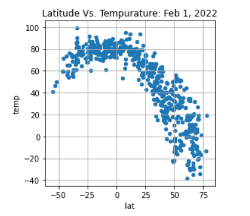

Latitude Vs Wind Speed
Latitude Vs Weather

Temperature Map
The task for the Latitude vs Weather project was to understand if weather changes due to a locations proximity to the equator.
First step was to source recorded weather data from the OpenWeatherMap API on over 500 cities.
Once the data was collected and organized, MatPlotLib was used to plot weather data vs. latitude. This site provides source data, visualizations
and findings of our analysis of maximum tempurature, cloudiness, humitidy and wind speed and how these elements of weather are affected by latitude.